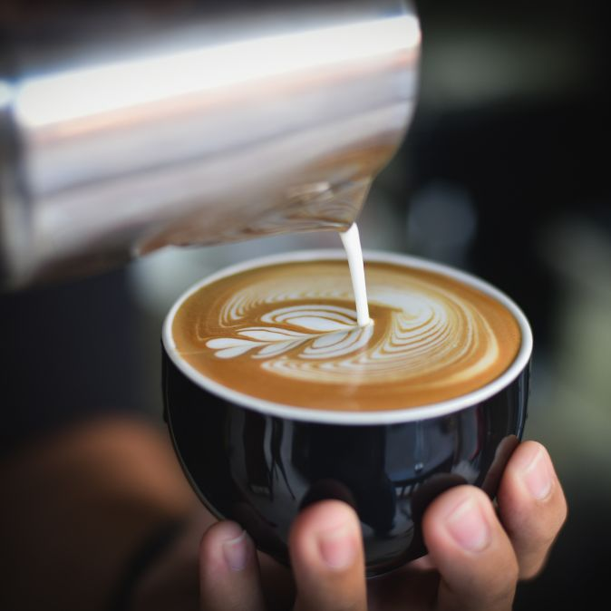

About Cafe Boutique
Welcome to Cafe Boutique
At Cafe Boutique, we believe that a great cup of coffee is more than just a beverage; it's an experience, a moment of indulgence, and a celebration of craftsmanship. Established in 2010, Brew Haven is not just a coffee shop; it's a community, a place where coffee enthusiasts, casual drinkers, and everyone in between can come together to savor the rich aromas and flavors of expertly brewed coffee.
Located in the heart of the city, Cafe Boutique brings the best to the market for your coffee experience. Founded in 2020, Cafe Boutique is already a standout in the city, attracting new coffee enthusiasts daily.
At Cafe Boutique,our mission is: is to enrich lives through the joy of exceptional coffee and the warmth of genuine connections. We are more than a coffee shop; we are curators of moments, craftsmen of flavor, and champions of community.
Step into Cafe Boutique, and you'll immediately sense the dedication to craftsmanship. Our baristas are not just coffee makers; they are artisans, meticulously trained to create the perfect cup for every customer. Whether you prefer a classic espresso, a velvety latte, or a bold pour-over, we take pride in every cup we serve..